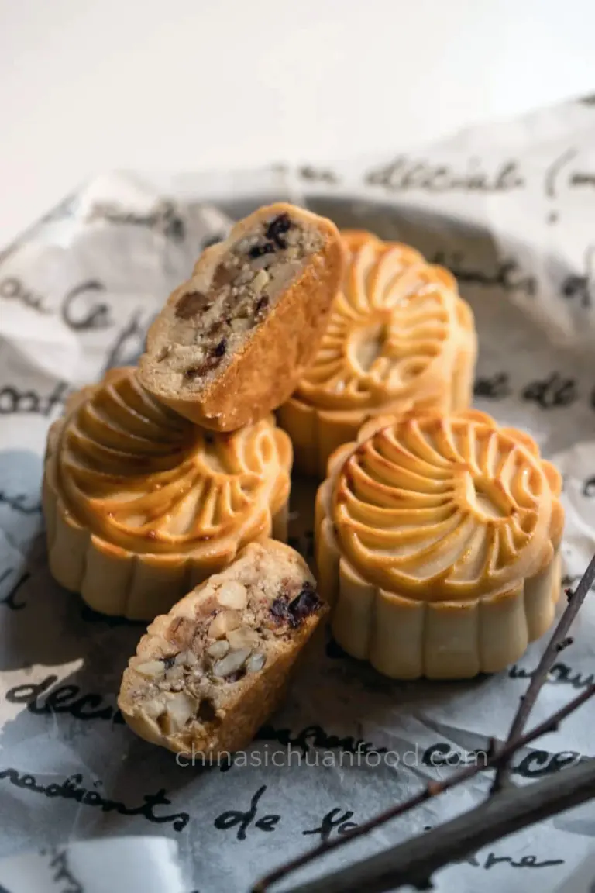
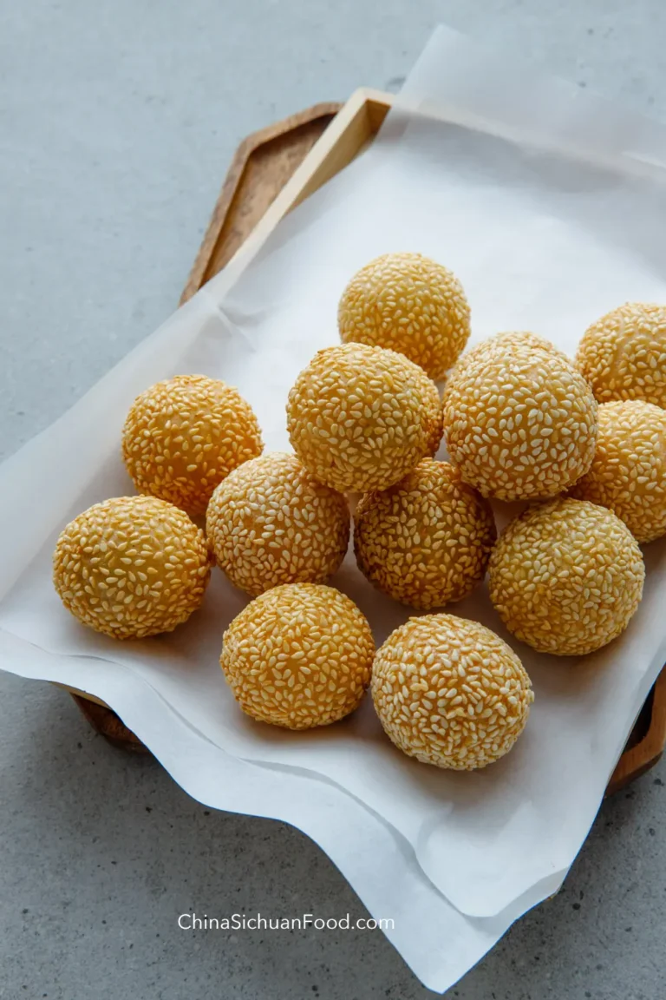

Chinese Desserts
1. Tanghulu (Candied Fruits)

Ingredients:
- 10-12 Skewered fruits (hawthorn or strawberries)
- 1 cup Sugar
- 1/4 cup Water
- 1 tablespoon Corn syrup
Instructions:
- Heat sugar, water, and corn syrup in a pan over medium heat until it forms a syrup.
- Dip the skewered fruits into the syrup and quickly cool them in cold water.
- Allow them to cool and harden before serving.
2. Sesame Balls (Jian Dui)
Ingredients:

- 1 cup Glutinous rice flour
- 1/4 cup Sugar
- 1/2 cup Water
- Red bean paste for filling
- Sesame seeds
Instructions:
- Mix glutinous rice flour, sugar, and water to form a dough.
- Shape the dough into small balls and stuff each with a spoonful of red bean paste.
- Roll the balls in sesame seeds and deep-fry them until golden brown.
- Serve warm.